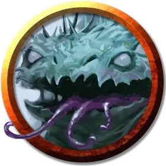

Вегепигмей колючка-охотник
Vegepygmy Thorny Hunter
Среднее Растение, нейтральное

Класс Доспеха 14 (природный доспех)
Хиты 27 (5к8 + 5)
Скорость 40 футов
| мод | спас | ||
|---|---|---|---|
| СИЛ | 15 | +2 | +2 |
| ЛОВ | 14 | +2 | +2 |
| ТЕЛ | 13 | +1 | +1 |
| мод | спас | ||
|---|---|---|---|
| ИНТ | 2 | −4 | −4 |
| МДР | 10 | +0 | +0 |
| ХАР | 6 | −2 | −2 |
Навыки Восприятие +4, Выживание +4, Скрытность +4
Сопротивление урону электричество; колющий
Чувства тёмное зрение 60 футов, пассивное Восприятие 14
Языки Язык Вегепигмеев
Опасность 2 (450 опыта)
Бонус мастерства +2
Особенности
Тактика стаи. Вегепигмей совершает с преимуществом броски атаки по существу, если в пределах 5 футов от этого существа находится как минимум один дееспособный союзник вегепигмея.
Растительный камуфляж. Вегепигмей совершает проверки Ловкости (Скрытность) с преимуществом, если он находится в любой достаточно укрытой растительностью местности.
Регенерация. Вегепигмей восстанавливает 5 хитов в начале своего хода. Если он получает урон холодом, огнем или некротической энергией, то эта особенность не работает в начале следующего хода вегепигмея. Он умирает только если начинает ход с 0 хитов и не может регенерировать.
Шипастое тело. В начале каждого своего хода вегепигмей наносит 2 (1к4) колющего урона всем схватившим его существам.
Действия
Укус. . Рукопашная атака оружием: +4 к попаданию, досягаемость 5 фт., одна цель. Попадание: 11 (2к8 + 2) колющего урона. Если цель является существом, то она должна преуспеть в спасброске Силы Сл 12, иначе будет сбита с ног.
Описание
Вегепигмеи, также называемые плесневелым народцем, — это грибные существа, которые появляются из тел Гуманоидов или Великанов, убитых красно-коричневой плесенью — ядовитым грибком, который, по слухам, прибыл со звезд.
Вегепигмеи расселяются маленькими группками, общаясь при помощи свиста, жестов и ритмичных постукиваний по телу. Хотя вегепигмеи и могут обеспечивать себя питательными веществами из почвы и прочей органики, они предпочитают плотоядную диету, которая достигается за счет охоты и сбора падали. Вегепигмеи могут существовать вечно, пока климат остается благоприятным для их грибных тел.
Обратитесь к книге «Морденкайнен представляет: Монстры мультивселенной, чтобы узнать больше о вегепигмеях.
Вегепигмей колючка-охотник
Колючки-охотники являются звероподобными вегепигмеями, произошедшими из трупов медведей, собак и прочих четвероногих Зверей. Они ведут себя подобно гончим, повинуясь приказам хозяев и преследуя добычу со смертоносной свирепостью.